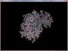
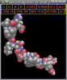

Une fois n'est pas coutume, ce tutoriel ne sera pas véritablement consacré à l'informatique. Ce que je vous propose, c'est d'aider la science en utilisant la puissance inutilisée de votre processeur. Je vais d'abord vous présenter le projet (ressortez vos cahiers de sciences nat' ^^ ), puis je vous montrerai le logiciel à installer. Je vous demande également de lire l'annexe, il y a des choses importantes en ce qui concerne le côté sans danger...
Le projet Folding at Home est un projet qui utilise la technique de la distribution de données. Il est mené par une équipe de l'université de Stanford (Californie), le Pande group, dont l'objectif est de comprendre le repliement des protéines.
De nombreux résultats ont d'ores et déja été publiés grâce à ce projet, leur liste est disponible ici, en anglais.
La distribution de données
C'est une technique qui permet d'utiliser plusieurs processeurs afin de réaliser plusieurs calculs simultanément. C'est donc une méthode de calcul en parallèle.
Un des projets de distribution de données les plus connus a été Seti@home. Le Seti est un organisme américain qui écoute les ondes électromagnétiques issues de l'espace, dans l'espoir d'y déceler une trace d'une vie extraterrestre (souvenez-vous d'une pub pour une boisson gazeuse à l'orange... HELLOOOOOO ! :lol: ). Vous avez tous en tête ces grandes antennes dans le désert du Nevada, non ?
Devant la montagne de giga-octets de données à traiter, un logiciel a été conçu, que tout geek qui se respecte a téléchargé sur son ordinateur. Ce programme télécharge un peu de données à partir du serveur du Seti, les analyse en utilisant la puissance inutilisée du processeur (ainsi il ne gène pas l'utilisation normale de l'ordinateur), puis renvoie les données traitées au Seti, qui en déduit que, non, finalement, ce n'est pas aujourd'hui qu'on découvrira des extraterrestres... ;)
D'autres projets existent aussi, en particulier BOINC, qui regroupe au sein d'un même logiciel de nombreux projets de calcul distribué.
Tous fonctionnent selon le même principe, mais pour cela, une capture d'écran s'impose. Voici, au moment où j'écris ces lignes, la charge de mon processeur (notez que je tourne sous Windows, mais ce logiciel existe aussi sous linux, sous Mac et même sous PS3 !) :
Eh oui, sur mon Athlon64 X2 4000+, double coeur à 2,1 GHz, tout neuf, plus des trois quarts de mon processeur sont inutilisés !
D'où l'idée de rentabiliser tout ça... Voici la même machine, 2 minutes plus tard. Je me suis contenté de lancer Folding@Home :
Et pourtant, je peux TOUT faire normalement, sans aucun ralentissement de ma machine. Je surfe sur internet, je peux jouer à des jeux vidéos ; actuellement, je suis en train d'installer la nouvelle version de mon antivirus, de taper ce tuto, et Windows Update tourne en tâche de fond (véridique ! ) !!!
Heu... o_O ? Avec ton processeur chargé à bloc, tu n'as aucun ralentissement ?
Eh non ! Car toute l'astuce réside dans le fait que les programmes utilisant la distribution de données s'exécutent avec la priorité la plus basse ! Ils n'utilisent vraiment que les miettes que leurs laissent les autres logiciels. On ne s'en rend même pas compte !
Évidemment, plus je vais utiliser mon processeur (je vous parlai des jeux tout à l'heure...), moins il va en rester pour ces logiciels, et les calculs seront moins rapides. Mais c'est mieux que rien, et puis, je vous l'ai dit, on ne sent rien ! Dans certaines entreprises, les ingénieurs réseaux ont installé sur tous les postes des logiciels de calcul distribué (sans forcément en avoir averti leur direction...). Les employés ne se doutent de rien !
Ici, je vous l'ai dit, il ne s'agit pas de chercher des petits hommes verts, mais de plier des protéines (ce qui à mon avis est plus utile, mais je ne rentrerai pas dans la polémique. ;) ).
Le repliement des protéines
Dans les organismes vivants, les protéines sont à la base de tout. Pour faire une comparaison, c'est comme les programmes pour un ordinateur. Dans un ordinateur, tout est programme (vous n'avez qu'à voir le nombre de processus dans mes captures d'écran...). Ces programmes communiquent entre eux, certains lancent d'autres programmes, les contrôlent, les stoppent ; d'autres interagissent avec l'extérieur, etc.
Pour rappel (je vous avais prévenus, sortez vos cahiers de biologie, interrogation écrite à la fin du tutoriel ! :D ), les protéines sont synthétisées grâce à l'ADN (entre autres). Tout juste synthétisées, les protéines ressemblent à une chaînette d'acides aminés. La protéine est donc linéaire, mais très rapidement, elle se recroqueville selon un processus mystérieux, pour prendre une forme particulière qui dépend de cette protéine. Une fois pliée (fold en anglais), elle acquiert sa fonctionnalité (comme quand on compile un programme).
Le pliage se produit parce que chaque acide aminé va pouvoir attirer ou au contraire repousser ses voisins, de la même manière qu'un aimant va attirer ou repousser un autre aimant, en fonction de leur polarité. Il ne s'agit pas de calculs très complexes, mais plutôt très nombreux. Il n'est pas rare d'avoir des protéines de plusieurs dizaines de milliers d'acides aminés, ce qui devient très long à simuler sur un ordinateur. Il faut environ 1 jour pour simuler 1 nanoseconde... Une protéine se plie en une dizaine de microsecondes... Et il y a plein de protéines différentes...
Mais à quoi ça sert de simuler ce pliage ? Il suffirait de regarder avec un microscope quelle forme a la protéine, non ?
Oui, bien sûr, sauf qu'on utiliserait une technique de diffraction aux rayons X au lieu d'un microscope, ou encore une technique de Résonnance Magnétique Nucléaire. Ce sont des techniques très lourdes, nécessitant des appareils très coûteux et très volumineux, pesant plusieurs tonnes et remplissant une pièce. De plus, les calculs nécessaires sont très nombreux et très complexes. En bref, ce sont des méthodes réservées à la recherche...
Eh non, tous les Zéros ne font pas des études d'informatique... Votre serviteur passe le plus clair de son temps dans une faculté de santé... La biologie est un domaine passionnant : si ça vous intéresse, il est encore temps de vous réorienter !
Mais surtout, ce qui nous intéresse, c'est la phase de pliage. Il serait très pratique de pouvoir déduire la forme (et donc la fonction) d'une protéine simplement à partir de sa structure linéaire. De plus, parfois, on ne sait pas encore pourquoi, certaines protéines se plient mal. Elles obtiennent alors une fonctionnalité différente de leur fonctionnalité initiale (comme une mutation), et ce phénomène est responsable de maladies telles que la maladie de la vache folle. On pense aussi que la maladie d'Alzheimer, de Parkinson, ou encore certains cancers, sont dus à ce phénomène. Le but de Folding@Home est de comprendre tout ça, et cela passe par une intense phase de simulation, à laquelle je vous propose de participer.
Il est donc vital pour des millions de gens qui souffrent, ou qui souffriront de ces maladies, que le mystère du repliement des protéines soit résolu le plus rapidement possible.
C'est pour ça, très chers Zéros, que toute la communauté scientifique a besoin de vous !
Pour en savoir plus... Remarquez que le site français est un peu obsolète... Les cours de biologie sont corrects, mais la page de téléchargement n'est pas toujours à jour. Il vaut mieux passer par le site officiel en anglais.
Dans l'université de Stanford, il y a des serveurs qui contiennent les données initiales des molécules à calculer. L'internaute doit installer un logiciel client sur son ordinateur ou sa PlayStation 3. Ce logiciel client va télécharger une unité de travail à partir du serveur. Cela prend deux minutes grand maximum... Puis il se met au boulot ! Le client va calculer le repliement de la protéine qui lui a été confiée. Cela peut prendre plus de 2 jours, voire une semaine ! Imaginez qu'avec votre processeur qui tourne à fond pendant deux jours, vous ne pouvez simuler qu'une nanoseconde du repliement d'une protéine ! Vous comprenez maintenant pourquoi les chercheurs ont fait appel aux internautes...
Une fois son unité de travail terminée, le client la renvoie au serveur qui lui en confie une autre, etc.
Une unité de travail, c'est un morceau de protéine à un moment précis. Par exemple, votre ordinateur va calculer ce qui se passe entre la 54e et la 55e nanoseconde, pour la protéine X. Vous aurez donc, parfois, l'impression que votre ordinateur calcule plusieurs fois la même protéine, mais il n'en est rien.
Chaque unité de travail porte un identifiant du type Project: 2420 (Run 3, Clone 53, Gen 8). Le projet, c'est le sujet d'étude d'une équipe de chercheurs : il s'agit le plus souvent du repliement d'une protéine en particulier. Ce projet est découpé en plusieurs parties (Run), elles-mêmes divisées en sous-parties (Clone), selon un schéma voulu par les scientifiques. Quant à Gen, cela représente le temps. La première unité de travail d'une sous-partie sera Gen 1, quand elle aura été calculée et renvoyée au serveur, celui-ci créera la Gen 2 et l'attribuera au prochain client qui passe par là, etc.
Le serveur a besoin d'une unité de travail pour générer la suivante, il est donc nécessaire que le client la renvoie dans un délai raisonnable. Les unités de travail possèdent donc une deadline. Il s'agit d'une date avant laquelle l'unité de travail doit être renvoyée au serveur. S'il ne l'a pas reçue à cette date, il la réattribuera à un autre client. Imaginez par exemple que vous ayez formaté votre disque dur alors que votre client était au beau milieu de son unité de travail, le serveur attendrait indéfiniment, pour rien... Si votre ordinateur est trop lent, ou pas assez souvent allumé, il est possible que vous dépassiez la deadline... Dans ce cas, quand votre client enverra son travail au serveur, vous ne gagnerez aucun point.
On peut configurer son client avec un pseudo et une équipe. Pour chaque unité de travail terminée, le serveur va donner à ce pseudo un certain nombre de points (en fonction de la taille du calcul qui a été confié au client). Il y a aussi la possibilité de former des équipes, afin de renforcer l'esprit communautaire. On peut également, sans aucun problème, installer plusieurs clients, un sur chaque ordinateur que l'on possède, et les configurer avec le même pseudo et la même team, ce qui a pour effet de multiplier la vitesse à laquelle on gagne des points !
Une version actualisée en temps réel est disponible ici : kakaostatsLa team du Site du Zéro est la n°53653, nous étions 5 dessus quand j'ai commencé à rédiger ce tuto (note : en Juillet 2007) ! Cette team a été créée par rapha222 en mars 2007. Merci à lui ! N'oubliez pas de mentionner ce numéro dans votre client ! Et vive le SDZ ! La page de stats de la team est ici : http://fah-web.stanford.edu/cgi-bin/ma [...] teamnum=53653 . De nombreux sites tiennent à jour des statistiques plus détaillés. En particulier, le site kakaostats.com. Après un pic à plus de 244 utilisateurs en août 2008, l'équipe rassemble aujourd'hui 173 processeurs (le 26 février 2009). Ca monte et ça descend...
Il y a donc un classement des internautes, et un autre des équipes.
Folding@Home est un projet très sérieux, je vous ai expliqué plus haut que son but final est de sauver des vies ! Il ne s'agit donc pas d'une compétition contre les autres membres, où le but serait d'engranger le plus de points possible, mais plutôt d'une course contre la montre, afin que l'on puisse le plus rapidement possible trouver des remèdes contres ces terribles maladies dont vous serez, malheureusement, nombreux à mourir...
C'est pour cela que les membres du Pande Group ont décidé de ne pas rendre publiques les sources de leur logiciel. Folding@Home n'est pas un projet libre, tout simplement parce que s'il l'était, n'importe qui pourrait truquer son client, renvoyer au serveur de fausses molécules, dans le seul but d'avoir beaucoup de points... Il est hors de question de détruire un projet scientifique d'envergure internationale, simplement pour le "plaisir" d'être classé TOP 10 !
Les données sont cryptées quand elles transitent sur Internet, justement pour éviter que des petits malins n'injectent de faux résultats dans le système. N'oubliez pas que le but n'est pas d'optimiser le code dans le but de gagner quelques FPS, mais au contraire d'assurer l'intégrité scientifique des calculs. De plus, sans vouloir vous vexer, à l'université de Stanford il y a des informaticiens chevronnés, ce ne sont pas les petits jeunes du SDZ qui vont leur dire où sont leurs bugs ;) !
Rendre le projet open source n'apporterait aucun bénéfice. De plus, le Pande Group a décliné ses clients sous plusieurs plateformes ! Il n'est donc pas nécessaire de recompiler le programme pour l'exécuter sur votre vieille station BSD, ou sous votre Linux favori !
Enfin, tous les résultats des calculs seront mis dans le domaine public, et seront donc accessibles gratuitement par tous les scientifiques qui en auraient besoin, quelle que soit leur nationalité. Ce n'est que de la science, pas du commerce !
On peux noter également que certaines parties du code, notamment les core, sont pour la plupart open-source... En savoir plus
Mais assez discuté : voyons maintenant les différents logiciels disponibles au téléchargement.
Les clients
Rendez-vous ici, sur la page d'accueil. Sur cette page se trouve un lien vers la version la plus à jour, ainsi que des liens vers les versions beta, et un autre vers les vieilles versions.
Voici les plateformes disponibles. Comme vous le voyez, elles sont nombreuses !
Windows
Windows - version GPU
Linux (32 et 64 bits), FreeBSD et OpenBSD
Mac OS X
PS3
La version GPU permet d'exécuter les calculs sur la carte graphique. Ce client n'est compatible qu'avec les cartes ATI de dernière génération (2600 et plus), ainsi que les GeForce 8 et supérieures, sous Windows uniquement. La version PS3 est disponible via le menu Réseau de votre console. Le logiciel se nomme Life with PlayStation.
Sur ces plateformes, il peut exister plusieurs types de clients :
version GUI ou Systray, avec une belle interface graphique et une représentation 3D de la protéine en cours ;
version Console, en texte brut. Utile pour les linuxiens et pour ceux qui aiment ;
version SMP, pour tirer parti de tous les coeurs de votre processeur, et gagner encore plus de points ;
version écran de veille, pour avoir un bel écran de veille ;
version(s) beta(s) d'un nouveau client, encore instable, pour les amateurs de sensations fortes !
Je tourne sous Windows, la plupart des captures d'écran sont donc sous Windows ! Cela dit, j'ai installé F@H dans une Ubuntu (virtuelle), pour essayer les clients et pouvoir vous en parler. Les procédures seront probablement similaires sous MacOS, mais je n'ai pas de Mac sous la main... Et bien entendu, ma PS3 tourne à fond !
Le client GUI (ou client graphique)
Disponible sous Windows et MacOS. Désolé pour les linuxiens (mais de toutes façons, vous préférerez la version console, non ? ).
Version 6.23 System tray pour Windows XP et supérieurs (non testé sous Windows 7 cela dit). Les utilisateurs de Windows 2000 et antérieurs doivent utiliser les versions 5, voire 4. Version 6.24.1 SMP Installer pour MacOS 10.4 et plus, sous architecture Intel. (Voir la note plus bas.) Ne fonctionne pas sous les Macs G3, G4 et G5 à architecture PPC. Version 6.26.3 SMP Installer pour MacOS 10.5 et plus. (voir aussi le paragraphe sur les versions SMP). J'ignore si elle tourne sur les Macs à architecture PPC. Vieilles versions disponibles sur la page réservée aux vieux clients (lien tout en bas de la page de téléchargements) :version 5.03 pour Windows (en particulier Windows 2000) ; version 5.02 Graphical client pour Machintosh G3, G4 et G5 sous architecture PowerPC. Fonctionne aussi avec les Mac Intel, mais cela ne présente que peu d'intérêt ; version 4.00 pour Windows 95, 98 et ME.
Version 6.23 System tray pour Windows XP et supérieurs (non testé sous Windows 7 cela dit). Les utilisateurs de Windows 2000 et antérieurs doivent utiliser les versions 5, voire 4.
Version 6.24.1 SMP Installer pour MacOS 10.4 et plus, sous architecture Intel. (Voir la note plus bas.) Ne fonctionne pas sous les Macs G3, G4 et G5 à architecture PPC.
Version 6.26.3 SMP Installer pour MacOS 10.5 et plus. (voir aussi le paragraphe sur les versions SMP). J'ignore si elle tourne sur les Macs à architecture PPC.
Vieilles versions disponibles sur la page réservée aux vieux clients (lien tout en bas de la page de téléchargements) :
version 5.03 pour Windows (en particulier Windows 2000) ;
version 5.02 Graphical client pour Machintosh G3, G4 et G5 sous architecture PowerPC. Fonctionne aussi avec les Mac Intel, mais cela ne présente que peu d'intérêt ;
version 4.00 pour Windows 95, 98 et ME.
C'est sans doute le client que vous installerez en premier, au début ! Il est livré avec un installeur (vous savez, suivant, suivant, terminer...). Notez cependant que, bizarrement, l'installeur ne semble pas fonctionner sur tous les ordinateurs... Si c'est le cas, essayez de vider vos fichiers temporaires via le nettoyage de disque sous Windows. Vous pouvez aussi essayer de déplacer l'installeur sur votre bureau, dans votre dossier personnel, voire sur la racine du disque dur ! L'important est de parvenir à le lancer... Si vous n'arrivez toujours pas à installer ce client, installez la version console, ce n'est pas grave.
Sous Windows, il en existe deux versions. À terme, la version 5.03 disparaîtra, mais pour le moment, les deux fonctionnent et plient les mêmes protéines avec les mêmes performances. La nouvelle version 6.23 corrige de nombreux bugs, mais elle permet surtout à l'université de Stanford d'unifier leur code entre toutes les plateformes, afin de faciliter les mises à jour. Pour le moment, la visualisation de la 6.23 est moche (!), et il arrive qu'elle plante, mais cette version est conçue pour que l'on puisse mettre à jour ladite visualisation très simplement. Et ce n'est de toute manière pas très utile !
Si vous ne parvenez pas à lancer la visualisation 3D, et que vous tenez absolument à visualiser votre protéine, il ne vous reste plus qu'à utiliser la v5.03, en attendant une nouvelle version. Pour l'heure, les deux versions proposent les mêmes protéines, et ont les mêmes performances.
Première chose, l'installeur de la version 5.03 a créé un raccourci dans le dossier démarrage du menu démarrer. Le client se lancera automatiquement au démarrage de Windows (vous pouvez supprimer ce raccourci si vous le souhaitez...). En revanche, celui de la version 6.23 ne le fait pas. Pour l'ajouter, copiez le raccourci présent dans le dossier Folding@Home-x86 de votre menu démarrer, et collez-le dans le dossier démarrage du même menu.
De manière générale, si vous voulez créer un raccourci (pour le mettre sur votre bureau par exemple), copiez-collez celui qui est contenu dans le menu démarrer.
C'est assez complexe, en fait. À partir de la version 6 (cela concerne toutes les versions possédant une GUI, pas les versions console), le client ne copiera pas les fichiers qu'il téléchargera dans le dossier où il est installé (Program files), mais dans le dossier C:\Users\xxxxx\AppData\Roaming\Folding@home-x86 (il s'agit d'un dossier caché), ceci à des fins de compatibilité avec l'UAC sous Windows Vista.
Ainsi, si vous voulez créer un raccourci vers le logiciel (version 6 et plus), vous devez mettre comme cible l'exécutable contenu dans Program Files, et dans Démarrer dans mettre votre dossier \AppData\Roaming\Folding@home-x86.
Il est donc beaucoup plus simple de copier-coller le raccourci du menu démarrer !
À sa première exécution, le client vous demandera quelques petites choses : votre pseudo (pensez à vérifier dans le bas de la page de téléchargement qu'il est disponible...), le numéro de votre équipe (53653 pour le Site du Zéro). Je vous demande également, sous l'onglet Advanced, de taper "-verbosity 9" sous Additional Client Parameters, ceci pour que le fichier .log soit un peu plus prolixe ! Le reste n'a pas besoin d'être modifié, sauf si vous n'avez pas de connexion permanente à Internet, dans ce cas vous devriez demander à votre client d'attendre votre accord avant de se connecter à Internet.
Validez. Votre client va alors télécharger une WU (Work Unit, c'est-à-dire unité de travail. Yes Folding@Home speaks English :euh: ... ).
Puis il va télécharger le core nécessaire. Le core est en fait l'algorithme qui va simuler le pliage. Il peut arriver que le Pande Group mette à jour son core. Dans ce cas, votre core sera mis à jour à votre prochaine protéine, automatiquement.
Et enfin, vous allez plier des protéines. Le client affiche un aperçu de la protéine simulée, en 3 dimensions. Il affiche également un récapitulatif de la situation (votre pseudo, le nom de la protéine en cours de simulation, le pourcentage effectué...). À ce propos, ne faites pas trop attention à l'estimation du temps restant, cette valeur est souvent assez fantaisiste, du genre 3 mois et deux jours... Et si vous avez la version 6.23, de toutes façons il n'y a même pas d'estimation !
Pour afficher la visualisation sous la v5.03, il faut double-cliquer sur l'icône dans la barre des tâches. Sous la v6.23, il faut y faire un clic-droit et sélectionner Display. Et sous la v6.23 seulement, les touches F1 à F12 font varier l'affichage !
La 5.03
De F1 à F6, les différentes visualisations disponibles sous la version 6.
Si vous cliquez sur la croix pour fermer le programme, le client graphique se minimise dans la barre des tâches. Il tourne donc en tâche de fond, et ne gêne absolument pas.
Pour le quitter complètement, faites un clic-droit sur l'icône près de l'horloge.
NOTE : on m'a souvent demandé si l'aperçu 3D ne consommait pas trop de ressources, ce qui ralentirait le calcul "utile" du repliement de la protéine. En réalité, c'est votre carte graphique qui fait les calculs 3D. Et ce calcul a lieu de manière espacée dans le temps, donc au final la perte de temps est très faible (d'autant que la plupart du temps, vous laisserez le client réduit dans la barre des tâches...).
NOTE 2 : si vous obtenez des erreurs, si le client ne semble pas réussir à télécharger correctement, c'est sans doute parce que vous avez installé F@H 5.03 dans le dossier C:\Programmes. Désinstallez-le, puis réinstallez-le dans votre dossier personnel, ou alors dans les dossiers partagés. Ou encore, installez la v6 !
NOTE 3 : j'ai remarqué une incompatibilité avec certains jeux vidéos qui ne parviennent pas à se lancer en plein écran quand Folding@Home est lancé. Heureusement, il est très simple de quitter le client, et de le relancer à la fin de la partie. La version console ne présente pas ce bug.
NOTE POUR LES UTILISATEURS DE MAC : Les versions "SMP Installer" ont un fonctionnement différent : elles s'installent dans les Préférences Système (accessibles via le menu Pomme). Il vous suffit d'y renseigner votre pseudo et votre team, puis de lancer le client, qui tournera en tâche de fond de manière invisible. Il se lancera automatiquement au démarrage de votre ordinateur, et ne possède pas (encore) de visualiseur.
Version Console
Disponible sous Windows, Linux/BSD et MacOS.Version 6.23 "Console client only" pour Windows XP et supérieurs (non testé sous Windows 7). Stable. Version 6.02 pour Linux et BSD. Stable. Version 6.24beta pour Linux 64 bits uniquement. C'est une beta, mais elle semble stable malgré tout. Version 6.26.3 Console only pour Mac Intel. Stable. Ne fonctionne pas sous les Macs G3, G4 et G5 à architecture PPC. Anciennes versions disponibles sur la page réservée aux vieux clients :version 5.04 pour Windows (en particulier Windows 2000, j'ignore si elle tourne sous les versions antérieures); version 5.04 pour Linux et BSD ; version 5.02 "text console" pour Mac G3, G4 et G5 à architecture PPC. Compatible Mac Intel. Là aussi, deux versions stables sont disponibles par plateforme. Sous Windows, prenez la v6, à moins que vous n'ayez Windows 2000. Sous Linux, la version beta fonctionne très bien si vous avez un processeur 64bits, sinon la v6.02 fonctionne très bien aussi. Inutile de s'encombrer de la v5.04 ! Sous Mac G3, G4, G5 à architecture PPC, direction la v5.02. Sous Mac Intel, la v6 vous tend les bras, mais je vous propose plutôt de l'exécuter en mode SMP, voyez plus bas dans mon tuto.
Version 6.23 "Console client only" pour Windows XP et supérieurs (non testé sous Windows 7). Stable.
Version 6.02 pour Linux et BSD. Stable.
Version 6.24beta pour Linux 64 bits uniquement. C'est une beta, mais elle semble stable malgré tout.
Version 6.26.3 Console only pour Mac Intel. Stable. Ne fonctionne pas sous les Macs G3, G4 et G5 à architecture PPC.
Anciennes versions disponibles sur la page réservée aux vieux clients :
version 5.04 pour Windows (en particulier Windows 2000, j'ignore si elle tourne sous les versions antérieures);
version 5.04 pour Linux et BSD ;
version 5.02 "text console" pour Mac G3, G4 et G5 à architecture PPC. Compatible Mac Intel.
Cette version affiche une console, comme ceci :
Elle est utile si vous ne pouvez pas utiliser la version graphique, ou si vous ne voulez pas le faire (particulièrement utile sur un serveur, par exemple)... Elle offre également des options plus poussées qui nous seront utiles plus loin dans ce tuto.
Le logiciel téléchargeable sur le site n'est pas un installeur, c'est directement le fichier exécutable du client. Copiez-le dans un dossier vide, quelque part dans votre dossier personnel, dans les dossiers partagés (public, sous Vista), ou alors à la racine de votre disque dur.
Sous Linux, vous devez ouvrir un terminal et vous placer dans le dossier que vous avez créé, puis donner les droits d'exécution au fichier fah6 (à faire une seule fois).
chmod +x fah6
Maintenant, exécutons le logiciel. Sous Windows, un double-clic nous suffira. Sous Mac, je vous avouerais que je n'en sais rien ! Sous Linux, toujours dans notre terminal, tapez ./fah6.
./fah6
Ce qui suit a été écrit pour la version 5.04 sous Windows. La version 6.23 sous Windows est pareille, les questions ne sont juste pas dans le même ordre ! La version 6.02 sous Linux est presque identique. Il existe juste une nouvelle option Passkey. Contentez-vous de valider sans rien mettre.
user name ? rien à dire...
team number ? celui du sdz est le 53653
Passkey ?(v6 uniquement) On ne met rien !
...installing as a service ? (Windows v5 uniquement) Censé gérer le démarrage automatique et invisible aux yeux de l'utilisateur... Je vous conseille de répondre no pour l'instant, car en cas de problèmes, vous n'aurez pas vraiment accès à la console... Lisez le paragraphe dédié à ce sujet plus loin dans ce tuto.
ask before sending work ? no si vous avez une connexion Internet permanente, yes si vous voulez que f@h demande votre permission avant de se connecter.
Use IE settings ? (Windows v5 uniquement) no fonctionne la plupart du temps, notez que yes ne fonctionne pas avec IE7.
use Proxy ? no, sauf si vous en avez besoin.
Allow recept... 5MB ? (v5) ou Acceptable size... small/normal/big ? (v6) permet de télécharger de grosses protéines, plus gourmandes en temps de calcul, plus longues donc, qui rapportent plus de points aussi. Ça dépend donc de votre ordinateur...
Change advanced options ? pour avoir accès à des options supplémentaires. no par défaut, si toutefois ça vous intéresse, mettez yes, et répondez à tout par défaut.;)
Puis le logiciel va télécharger une protéine, le core qui va avec, et va plier... Ici point d'animation 3D, ce n'est que de la console. Si vous fermez la fenêtre sous Windows, F@H va se fermer proprement. IL NE SE RÉDUIT PAS EN ICÔNE DANS LA BARRE DES TÂCHES ! Vous devez donc garder la console ouverte en permanence (ou alors réduite dans la barre des tâches ou le dock...). Sous Linux en revanche, NE FERMEZ PAS LE TERMINAL. Le client serait alors sauvagement tué, et il n'aime pas ça !
Quel que soit votre OS, pour fermer proprement le client, tapez Ctrl + C .
Je sais qu'il existe des solutions pour réduire un programme dans la barre de notification (sous Windows, du moins) : je vous en présente d'ailleurs une en Annexe. Par la suite, quand vous relancerez le programme, vous n'aurez pas à entrer à nouveau les paramètres car ils auront été mémorisés. Si vous souhaitez les modifier, il faut lancer le logiciel avec le flag -config. Vous pouvez aussi le lancer avec le flag -help pour avoir de l'aide sur les flags disponibles. Et ici aussi, le flag -verbosity 9 permet d'avoir un fichier .log plus précis.
Donc, pour passer un ou plusieurs flags au programme, il est nécessaire de fermer le programme avant.
NOTE : pour les linuxiens, il peut être judicieux de lancer le client dans une console plein écran... Ctrl + Alt + F1 ou F2 ou autre pour y aller, Ctrl + Alt + F7 pour retourner sous le serveur graphique. Le client tournera ainsi en arrière-plan, sans vous gêner. Vous pouvez aussi jouer avec les commandes bg et compagnie, je vous renvoie au tuto de M@téo21 sur Linux pour plus d'infos ;) .
Version Écran de veille
Cette option est intégrée à la version graphique v5.03 sous Windows (regardez dans les options). Cela ne concerne donc que les MacUsers ^^ .Ces clients sont disponibles sur la page réservée aux vieux clients :version 5.03 pour Windows (voir dans les options) ; version 5.02 "screensaver" pour Mac PPC et Mac Intel.
Ces clients sont disponibles sur la page réservée aux vieux clients :
version 5.03 pour Windows (voir dans les options) ;
version 5.02 "screensaver" pour Mac PPC et Mac Intel.
Similaires à la version graphique, leur fonctionnement et leur configuration est identique, sauf qu'il faut les sélectionner en tant que écran de veille dans votre OS. Ces versions ne calculent que quand l'écran de veille est actif. Je ne pense pas que ce soit vraiment nécessaire de s'en servir, étant donné que Folding@Home ne gêne pas le travail de l'utilisateur... À vous de voir !
Versions GPU
Seulement disponible sous Windows, sur la page dédiée aux clients beta. Quand elles seront stables, elles sortiront sous Linux.Version 6.23 "System tray". Client avec une interface graphique. Versions 6.23 "Console". Attention, les utilisateurs de Vista doivent télécharger la version adaptée !
Version 6.23 "System tray". Client avec une interface graphique.
Versions 6.23 "Console". Attention, les utilisateurs de Vista doivent télécharger la version adaptée !
Uniquement compatibles avec les cartes graphiques de ATI 2600 et supérieures (et seulement avec certains drivers Catalyst...), ainsi qu'avec les GeForce 8 et supérieures (et là aussi, les derniers pilotes Forceware), elles utilisent en fait un code entièrement différent du code CPU. Ces versions se servent de la puissance de calcul de votre carte graphique, qui effectue certains types de calculs beaucoup plus rapidement que le CPU. Les calculs sont donc plus rapides, ce qui est mieux pour la science !
Elles sont normalement stables, mais je vous conseille tout de même d'installer en premier les clients CPU. Quand vous aurez plié quelques WU et que vous aurez bien pris en main le logiciel, vous pourrez vous y frotter... Leur configuration est identique à celle des clients GUI et console.
Versions SMP
Stable depuis peu sous Linux/BSD. Encore en beta sous Windows. Stables sous MacOS, mais non compatibles avec les Macs à architecture PPC.Version 6.02 pour Linux 64 bits. Stable. Il suffit de l'exécuter avec le flag -smp . Version 6.24beta pour Linux 64 bits. Version beta mais elle semble stable malgré tout. Il suffit de l'exécuter avec le flag -smp . Versions 6.24.1 et 6.26.3 SMP Installer pour Mac Intel. Hé oui, je vous ai menti, ces clients sont en réalité des clients SMP quand ils sont utilisé sous une architecture Intel. Ils sont stables et n'ont rien de particulier à configurer. Version 6.26.3 Console only pour Mac Intel. Stable. Il suffit de l'exécuter avec le flag -smp . Versions Windows, encore en beta (disponibles sur la page dédiée aux versions beta) :version 6.23beta DEINO pour Windows 32 bits. Il faut l'exécuter avec le flag -smp -deino. Instable. Vous devez installer la 6.23, puis copier par dessus l'exécutable 6.24 disponible en téléchargement sur la même page ; version 6.23beta MPICH pour Windows. Il faut l'exécuter avec le flag -smp. Moins stable que la DEINO, mais compatible 32 et 64 bits. Vous devez installer la 6.23 puis copier par dessus l'exécutable 6.24 disponible sur la même page ; versions 5.91 et 5.92 pour Windows. Encore moins stables que les précédentes. Il faut les exécuter avec le flag -smp, mais êtes-vous sûr de vouloir le faire ?
Version 6.02 pour Linux 64 bits. Stable. Il suffit de l'exécuter avec le flag -smp .
Version 6.24beta pour Linux 64 bits. Version beta mais elle semble stable malgré tout. Il suffit de l'exécuter avec le flag -smp .
Versions 6.24.1 et 6.26.3 SMP Installer pour Mac Intel. Hé oui, je vous ai menti, ces clients sont en réalité des clients SMP quand ils sont utilisé sous une architecture Intel. Ils sont stables et n'ont rien de particulier à configurer.
Version 6.26.3 Console only pour Mac Intel. Stable. Il suffit de l'exécuter avec le flag -smp .
Versions Windows, encore en beta (disponibles sur la page dédiée aux versions beta) :
version 6.23beta DEINO pour Windows 32 bits. Il faut l'exécuter avec le flag -smp -deino. Instable. Vous devez installer la 6.23, puis copier par dessus l'exécutable 6.24 disponible en téléchargement sur la même page ;
version 6.23beta MPICH pour Windows. Il faut l'exécuter avec le flag -smp. Moins stable que la DEINO, mais compatible 32 et 64 bits. Vous devez installer la 6.23 puis copier par dessus l'exécutable 6.24 disponible sur la même page ;
versions 5.91 et 5.92 pour Windows. Encore moins stables que les précédentes. Il faut les exécuter avec le flag -smp, mais êtes-vous sûr de vouloir le faire ?
Certaines sont stables (versions basées sur les systèmes UNIX) et disponibles sur la page principale de téléchargement. Leur utilisation est similaire à celle des clients console traditionnels. Néanmoins, pour les clients Linux, il vaux mieux être habitué au client traditionnel avant. En revanche, sous Mac, aucun souci à avoir, elle est adaptée même aux débutants. Il faut simplement les exécuter avec le flag -smp si ce sont des versions consoles. La version Universal sous MacOS fonctionne toute seule comme une grande, sans aucun flag.
D'autres sont instables (versions Windows), en beta et disponibles sur la page des betas. Vous pouvez toujours les essayer si vous êtes téméraires, mais je ne vous serai pas d'une aide très précieuse en ce qui concerne leur utilisation. De plus, l'installation sous Windows est complexe. Je vous renvoie ici (client DEINO) et ici (client MPICH) pour des instructions que je n'ai pas le courage de traduire !
Ces versions sont conçues pour tourner sur des machines avec des processeurs multi-coeurs, voire sur des machines multi-processeurs. La règle est : un client peut contrôler jusqu'à 4 coeurs. À moins d'avoir un octo-core dans votre ordinateur, il n'est donc pas nécessaire d'en exécuter plus d'une instance à la fois.
Version PS3
Disponible uniquement... sur PS3 !Version 1.3.1 à l'heure actuelle, mais de toute façon, votre PS3 vous proposera les mises à jour au fur et à mesure.
Version 1.3.1 à l'heure actuelle, mais de toute façon, votre PS3 vous proposera les mises à jour au fur et à mesure.
Le client se trouve dans le menu Réseau, il s'agit de l'item Life with PlayStation. Attention, si vous avez à la place une icône Folding@Home, vous devez faire une mise à jour.
La première fois que vous lancerez ce logiciel, vous devrez le télécharger, puis l'installer. Sélectionnez-le simplement avec la touche croix, et laissez-vous guider. Par la suite, le lancement de ce logiciel se fera au même endroit.
Une fois lancé, vous vous retrouverez face à un globe terrestre. Amusez-vous 5 minutes à le faire tourner dans tous les sens si vous le souhaitez (avec les joysticks), puis passons aux choses sérieuses. L'interface de Life with PlayStation (que j'abrégerai désormais LWP) est basée sur les Canaux : maintenez la touche carré enfoncée, et vous pourrez choisir entre quelques canaux (gageons qu'à l'avenir, Sony en mettra d'autres à notre disposition). Le canal Folding@Home est plus sobre, mais fonctionne sur le même principe. Astuce : la touche select permet de varier l'affichage de ce canal. Essayez !
A partir du moment où LWP est lancé, votre console travaille pour Stanford : le client est en fait en arrière plan de cette application. Sans que vous le sachiez (enfin, c'est écrit dans la licence que vous venez d'accepter ! Mais l'avez-vous lue ? ), votre console a déja téléchargé une WU, et elle est en train de la calculer. Contrairement aux clients du monde des ordinateurs, ici il n'est pas possible d'exécuter FaH en arrière plan. Vous ne pourrez donc pas jouer (ce pour quoi est pourtant fait votre console à la base !) tout en travaillant pour la recherche. Par contre, tant que vous resterez dans LWP, les calculs s'exécuteront. Et comme dant toute application Playstation, vous avez un accès permanent au menu de votre console via le bouton PS de votre manette.
Examinons maintenant le menu de LWP, accessible via la touche triangle. Vous serez ravi d'apprendre qu'il est possible de désactiver cette musique qui commence à devenir saoulante !
Canal actuel : Le contenu de ce sous-menu varie selon le canal que vous avez séléctionné.
Configuration : Permet la configuration du logiciel LWP.
Musique : A votre avis ?
Aide : Affiche un rappel des touches utilisables de votre manette. D'une utilité discutable...
A propos de... : Affiche le mode d'emploi en ligne de LWP. Pauvre en contenu, je vous laisse juger de sa pertinence...
Je vous laisse donc vous précipiter sur le menu Musique... Ca fait du bien, hein ;) ! Notez au passage que vous pouvez demander la lecture de votre propre musique (pour peu qu'elle soit enregistrée dans le disque dur de votre console). Quant à la fonction Sélectionner par humeur, faites moi signe si vous parvenez à la faire fonctionner !
Plongeons nous à présent dans le menu Configuration.
Configuration
Economiseur d'écran : Permet de masquer l'affichage du globe terrestre au bout d'un certain temps d'inactivité de la manette. Sans besoin de calculer l'affichage du globe en 3D, votre console disposera d'un petit peu plus de puissance qui vous permettra de calculer votre WU un petit peu plus vite.
Effets sonores : Si les ding, ding de votre console vous exaspèrent, c'est par ici...
PlayStationNetwork : Ne contient qu'un seul item, qui vous permet d'activer la demande de connection au PSN. Sony relie en effet les WUs que vous avez calculé avec votre identifiant PSN, et ils devraient sortir une mise à jour prenant en compte les Trophés du PSN. Cela dit, une option dans le menu de votre console permet de s'y connecter automatiquement...
Démarrage automatique : Vous permet de choisir sur quel canal doit démarrer LWP. Vous avez le choix entre le canal visité lors de l'extinction précédente, ou alors le canal Folding@Home. Mais n'oubliez pas que votre console pliera des protéines même si elle est sur le canal Live...
Comme vous le voyez, quelques options plus ou moins utiles, mais pas de quoi casser trois pattes à un canard ! Si vous voulez plus d'options, place au menu canal actuel. Je ne me donnerai pas la peine de détailler le menu du canal Live, je suis sûr que vous comprendrez tous seuls à quoi correspond son unique item ! En revanche, le menu du canal Folding@Home est très chargé, comme vous pouvez le constater :
Canal actuel [Folding@Home] :
Paramètres : Contient quelques options générales.
Mode boîte : Permet d'afficher une boîte transparente autour de la molécule, lorsque vous l'affichez en plein-écran via le bouton select. Je trouve ça moche, mais c'est à vous de voir !
Classement : Permet d'activer un classement interne à Sony, rattaché à votre identifiant PSN. Rien à voir avec le classement de chez Stanford, les points ne sont pas calculés sur la même base. Vous pouvez utiliser en parallèle les deux classements. Il semblerait que Sony projette d'utiliser ce classement pour attribuer des Trophées aux utilisateurs, mais ce n'est pas encore d'actualité. Vous devez bien sûr être connecté au PSN pour cela.
Mode : Normal ou avancé. Selon votre choix, vos WUs seront de taille standard (2 ou 3 heures de calcul) ou plus importantes (8 heures voire plus). Attention aux deadlines toutefois ! Ne passez en mode avancé que si votre console est allumée sur LWP plus de 8h par jour.
Extinction automatique : Permet d'éteindre votre console automatiquement après la WU en cours, ou au bout d'un certain temps. Attention, au redémarrage, cette option sera toujours active, pensez donc à la désactiver lors de ce redémarrage...
Informations : Regroupe toutes les informations relatives à votre client PS3, ainsi que diverses statistiques.
Statistiques du système : Le système, c'est votre PS3. Cette page affiche simplement le nombre de WU calculées sur cette console.
Mes statistiques : Affiche votre page de stats directement à partir du site de Stanford. Mais pour cela, vous devez avoir renseigné votre pseudo dans le menu Identité.
Statistiques de mon équipe : Idem, mais concerne votre équipe favorite, le SDZ bien sûr !
Mon certificat : Affiche un certificat qui certifie que vous avez... 0 points ! Et oui, c'est encore un peu buggé on dirait !
Statistiques CPU et Statistiques OS : Récapitulent la répartition des clients entre Windows, Linuw, Mac, CPU, GPU, PS3...
Projet actuel : Vous affiche un descriptif du projet scientifique auquel vous contribuez actuellement. Si vous comprenez l'anglais, et si la biologie ne vous fait pas peur, cette page vous intéressera peut-être...
Folding@Home News : Affiche le blog du Pande Group. Utile pour savoir si leurs serveurs sont en rade, ou si une nouvelle version d'un client quelconque est disponible. C'est en anglais bien sûr, n'oubliez pas qu'ils sont en Californie !
En savoir plus : Pour comprendre ce que sont les protéines. Un petit cours (en anglais) de vulgarisation sur la biologie moléculaire.
Supports visuels : Permet de définir de quelle manière sera représentée la protéine. En effet, en bioinformatique, il existe plusieurs moyens de visualiser une molécule. Sachez juste que le Carbone est traditionellement représenté en gris, l'Hydrogène en blanc, l'Oxygène en rouge, l'Azote en bleu et le Souffre en jaune.
Attribution des espaces : Cette visualisation est sans doute la plus proche de ce à quoi ressemblent vraiment les molécules : une grosse masse d'atomes, un gros truc tout boudiné qui ne ressemble à rien. Pour les curieux, cette visualisation représente les atomes par leur rayon de Van der Walls, c'est à dire, en gros, l'espace qu'occupent les électrons de chaque atome.
Boule et bâton : Plus simple à visualiser, cette représentation dessine les atomes par des petites boules de couleur, et les liaisons entre atomes par des bâtons. Ici aussi pour les curieux, ce n'est qu'une représentation, pas la réalité. Ce mode de visualisation représente en quelque sorte le "squelette" des molécules. Si on rajoute des muscles et de la chair par dessus les os, on obtient la représentation Attribution des espaces.
Tapioca, Caviar : La même que Attribution des espaces, mais colorée différement. Les goûts et les couleurs...
Réglisse : Comme Boule et bâton, mais sans boules ! On ne voit donc que les liaisons atomiques.
Ossature : Cette visualisation n'est pas disponible pour toutes les WUs. Elle permet d'afficher certains atomes en Attribution des espaces, d'autres en Boule et bâton ou en Réglisse, afin de montrer précisémént quelle partie de la molécule intéresse les chercheurs.
Identité : C'est ici que vous allez renseigner votre pseudo et votre équipe.
Changer le nom du donateur : Mettez ici votre pseudo. Si vous avez d'autres clients installés sous Windows, Linux/BSD ou Mac, vous pouvez mettre le même pseudo. Les points gagnés s'ajouteront alors à vos stats. Et une PS3 qui plie, ça paye bien !
Rejoindre une équipe : C'est ici que vous devez entrer le code magique 53653, celui de la team du SDZ.
Créer une équipe : Ce lien vous renvoie au site de Stanford, qui vous permet de créer une équipe. Ceci est aussi possible via votre ordinateur, sur le site de Stanford.
Tableau de classement : Affiche votre classement Sony. Pour cela, vous devez être connecté au PlayStation Network (touche PS >PlayStation Network>Connexion)
Aide : Affiche un petit texte explicatif sur le logiciel. Mais mon tuto le surpasse de loin :p !
A propos de... : Affiche un résumé (en anglais) de ce qu'est le projet Folding@Home.
Ce menu est donc plutôt chargé, mais le client PS3 présente l'avantage de ne pas nécessiter de réglages, contrairement aux autres clients.
Une autre fonctionnalité intéressante : appuyez deux fois sur la touche carré. Vous aurez alors une fenêtre vous permettant de gérer la musique qui est diffusée. Vous pouvez choisir vos propres morceaux, à contition que vous ayez bien renseigné vos Listes de lecture ! Sony a encore quelques progrès à faire concernant l'ergonomie de sa bibliothèque audio !
La dernière option dont je dois vous parler est l'option de démarrage automatique. Grâce à elle, LWP se lançera automatiquement dés que votre console sera restée inactive un certain laps de temps sur le menu principal. Pour l'activer (ou la désactiver), allez dans le menu principal (touche PS), puis sous Réseau>Life with Playstation, appuyez sur triangle. L'option démarrage automatique permet de spécifier le temps d'attente : 10, 20 ou 30 min. Mais comprenez bien que cette option ne démarrera pas votre console toute seule ! C'est juste le lancement de LWP qui se fera automatiqueent au bout de XX minutes. Pratique si vous voulez allumer votre console le matin pour qu'elle calcule pendant la journée : même pas besoin d'allumer la télé !
En résumé, le client PS3 ne permet pas, à l'heure actuelle, d'utiliser sa console en même temps (sauf si vous aimez écouter votre musique via les haut parleurs de votre télé ! ). Mais les développeurs travaillent sur l'intégration d'un navigateur internet complet au sein de LWP, d'autres applications basées sur les canaux de LWP devraient voir le jour, et je suis sûr que quand les développeurs parviendront à exécuter LWP en arrière plan, pendant que vous jouez, ils nous en feront profiter !
Alors voilà, vous avez installé un client, il semble plier des protéines, et pourtant votre processeur n'est utilisé qu'à 50 % de ses capacités... Je sors ma boule de cristal, et que vois-je ? Vous avez un processeur double coeur ! (Je me trompe ? ;) )
Des symptômes similaires apparaîtront si vous avez un processeur avec la technologie HyperThreading. Si c'est le cas, lisez le secret. Le principe du HT est de créer un processeur virtuel par coeur, de sorte que votre OS voie deux processeurs là où il n'y en a qu'un (sur un mono-core), quatre là où il y en a deux (sur un dual-core)...
Un coeur de processeur dispose de plusieurs circuits (je simplifie à l'extrême, hein, car on est sur le Site du Zéro) : un pour l'addition, un pour la soustraction, pour la multiplication, etc. Il y a en outre des instructions spéciales, par exemple les jeux d'instructions pour la virtualisation, pour le calcul 3D, et plein d'autres, ce qui fait autant de circuits sur le coeur.
En temps normal, votre coeur effectue des calculs les uns après les autres, et pour chaque calcul, il n'utilise QUE le circuit correspondant. Les autres circuits sont inutilisés. Par exemple, si vous effectuez une addition puis une soustraction, votre processeur fera deux cycles de calcul.
La technologie HT permet d'effectuer les deux calculs simultanément, en utilisant simultanément les deux circuits différents. En un cycle, votre coeur aura calculé deux calculs. Cela ne fonctionne que si les deux calculs NE FONT PAS appel au même circuit. L'un des calculs s'effectuera sur le coeur physique, et l'autre sur le coeur logique.
En pratique, on a l'impression que le processeur fait deux calculs en même temps, comme un dual-core (cette technologie date d'avant les dual-core).
F@H n'utilise qu'un seul type de circuit. Donc, avec cette technologie, on ne peut pas faire tourner deux instances de F@H sur le même coeur sans perdre de performances. De plus, votre OS a l'impression que l'un des coeurs ne travaille pas, d'où les 50 % d'utilisation. Il s'agit en fait du coeur logique, qui ne peut pas effectuer ce genre de calcul car le circuit est déjà utilisé. Vous pouvez cependant toujours faire autre chose (surf sur internet, voire jeux vidéos...), ce qui sollicitera autant que faire se peut le coeur logique.
Si vous n'avez pas tout compris, ce n'est pas forcément grave. Le plus important est de savoir si vous avez un dual-core ou un mono-core avec HT.
Où est le problème ?
Le problème est simple : mis à part les versions SMP disponibles sous Linux et MacOS (encore en beta test, sous Windows), les versions actuelles de Folding@Home ne sont pas optimisées pour les processeurs double coeur. Vous pliez une protéine, en utilisant un coeur de votre processeur. Votre deuxième coeur ne peut pas être utilisé pour accélérer les calculs de Folding@Home.
Vous avez deux possibilités :
soit vous n'utilisez qu'un coeur pour Folding@Home, et l'autre pour votre utilisation de bureautique. Dans ce cas, eh bien ne changez rien, vous y êtes. Vous ne donnerez que 50 % de votre processeur à la science, mais au moins vous serez sûrs que votre ordinateur ne sera pas ralenti car il vous restera 50 % de temps processeur disponible...
soit vous décidez de donner toute la puissance de votre processeur à la science. Il y a de petites bidouilles à faire, rien de bien compliqué rassurez-vous...
Le principe
Dans la mesure où les clients ne sont pas prévus pour le multi-coeur, ils sont prévus pour s'exécuter sur un seul coeur. Donc, petite devinette : si vous avez deux coeurs, combien pouvez-vous lancer de clients ?
Réponse : deux !
Sauf que, si vous essayez de lancer deux fois le client graphique, on vous affichera un message comme quoi vous ne pouvez lancer le logiciel qu'une seule fois en même temps ! Si vous essayez de lancer deux fois la version console, les deux consoles seront ouvertes, mais elles vont afficher des erreurs, se marcher sur les pieds, et rien ne sera calculé au final ! Quant à lancer deux fois la version économiseur d'écran, heu je ne vois pas trop comment c'est possible ^^ !
L'identification des clients
Quand il se connecte à un serveur, votre client va s'identifier. Cela permet aux serveurs de compter le nombre de clients actifs, cela permet aussi de faire un suivi des molécules (tel client calcule telle molécule...). Cette identification se fait grâce à un user_ID, nombre aléatoire généré par le client, qui correspond en fait à un ordinateur, et à un machine_ID, qui permet de différencier plusieurs clients qui s'exécuteraient sur le même ordinateur.
Il va donc falloir installer deux clients, et modifier le machine_ID de l'un des deux.
Comment faire ?
Sachez que l'on ne peut modifier le machine_ID des versions graphiques que depuis la v6. De plus, on ne peut pas choisir où installer la version 6.23 GUI (pour Windows, donc) car elle s'installe obligatoirement dans le dossier Program Files. On ne peut donc en installer qu'une (au maximum).
Nous allons donc installer un client GUI et un client Console, ou alors deux clients Console (ou n'importe quelle autre combinaison à base de client SMP, de client GPU, etc.).
Il est impératif d'installer les deux clients dans des dossiers différents. Il faut également les exécuter avec le flag -local si vous utilisez les vieilles versions 5.02, 5.03 et 5.04.
Pour exécuter les clients v5 avec le flag -local (ou n'importe quel autre que vous voulez soumettre au client), créez des raccourcis sur votre bureau (sous Windows), et modifiez la ligne "cible" des propriétés du raccourci en ajoutant le flag -local (ou n'importe quel autre).
Ou alors, lancez-le avec le flag -local via une console.
Si vous avez installé un client graphique, exécutez-le en premier, sinon, exécutez un client console. Configurez-le normalement (cf. mon paragraphe plus haut). Vous pouvez, dans la version 6.23 GUI, modifier le MachineID, mais il est plus simple de le laisser à 1, afin de configurer les clients dans l'ordre...
Puis exécutez le deuxième client, qui est lui obligatoirement un client console. Répondez à toutes les questions comme expliqué plus tôt, mais répondez yes à "change advanced options ?". Note : pour reconfigurer un client console, exécutez-le avec le flag -config, plus le flag -local si vous êtes sous la 5.04 Windows. Soit -config -local.
Il s'agit de paramètres avancés qu'il est inutile de modifier (sauf si vous en avez vraiment envie...). Contentez-vous de valider les paramètres par défaut. Le paramètre qui nous intéresse est celui-ci :
Machine ID (1-8) [1]? ##sous la 5.04
Machine ID (1-16) [1]? ##sous les v6 et plus
Si vous avez bien suivi (et même si ce n'est pas le cas :p ), vous devez entrer "2" (ou "3", "4"...). Et voilà ! Vos deux clients s'exécutent simultanément, sans aucun problème...
Si vous faites partie des chanceux qui ont un quad-core, plusieurs processeurs, ou si vous voulez lancer des clients GPU, SMP ou autre en plus, n'oubliez pas une chose : le Machine ID doit être différent pour tous les clients qui d'exécutent sur une même machine. Il ne doit en aucun cas y avoir deux clients avec le même Machine ID sur votre ordinateur.
Cette partie s'adresse aux utilisateurs de la version console, sous Windows, qui en ont marre de cette fenêtre toujours ouverte sur leur bureau. Cette méthode est plus propre que celle décrite en annexe. Cela ne fonctionne bien qu'avec la version console CPU. Les versions GPU, et les SMP beta buggent quand on tente d'utiliser cette option (mais ça marchera, un jour...).
Service ? C'est quoi, ça ?
Reprenons ma première capture d'écran...
Ça fait beaucoup de processus, vous ne trouvez pas (en bas à gauche) ? D'autant que je n'ai pas autant de fenêtres ouvertes sur mon bureau... Tous ces processus sont en fait pour la plupart des composants de Windows. Ce sont des services. Mais où se cachent-ils ?
Par un clic-droit sur le Poste de travail, sélectionnez Gérer (il faut être administrateur), puis dans l'arborescence à gauche, cliquez sur Services. Vous obtiendrez ceci :
Comme vous le voyez, il y en a beaucoup, des utiles et des moins utiles, certains sont démarrés, d'autre non, certains sont programmés pour s'exécuter automatiquement au démarrage... Vous pouvez aussi démarrer et arrêter manuellement les services, et modifier certaines de leurs propriétés.
C'est exactement ce qu'il me faut !
Le problème, c'est qu'aucune option ne permet d'ajouter un service manuellement. Ce sont les logiciels qui doivent demander à s'installer en service (c'est d'ailleurs ce que font la plupart des virus...). Justement, dans le client console existe une option pour lancer le client en tant que service. Il s'agit de la troisième question dans le client 5.04, et d'une option avancée (Advanced option) sous la v6.
Si vous avez un processeur monocore, pas de problème. Exécutez vos clients avec le flag -config, en tant qu'administrateur, et répondez yes à la bonne question. Au prochain redémarrage de votre ordinateur, aucune fenêtre de console ne s'ouvrira, mais vous verrez que votre processeur est utilisé à 100 %. D'ailleurs, un nouveau service est apparu dans la liste.
Et si j'ai un double coeur, ou plus ?
C'est exactement pareil, sauf que l'opération doit être effectuée pour chaque instance du client. Contrairement à ce que j'indiquais dans les versions précédentes de mon tuto, il n'est pas nécessaire de modifier le registre pour ajouter le flag -local, car lorsqu'il est exécuté en service, le client utilise automatiquement le fichier de configuration présent dans le fichier local. De plus, les nouvelles versions v6 n'ont plus besoin de ce flag. Bref, pour ceux qui connaissaient mon tuto avant que je ne modifie cette partie, c'est que du bonheur !
Et voilà !
Désormais, vous avez dans la liste des services un (ou deux, ou plus...) service(s) intitulé(s) FAH-Quelque-chose, que vous pouvez démarrer, arrêter et dont vous pouvez modifier les modalités de démarrage directement à partir de cette interface.
Simplement, si un jour vous avez besoin d'exécuter le client manuellement (voir la suite de mon tuto), n'oubliez pas d'ajouter le flag -local si vous utilisez la 5.04.
Nos amis linuxiens aussi en ont marre de ce terminal ouvert en permanence sur leur bureau ? Ils aimeraient bien que FaH se lance automatiquement au démarrage de leur ordinateur ?
Sachez que, contrairement à la version Windows qui intègre une option service, la version Linux ne propose rien de semblable, car Linux ne propose pas de services comme le fait Windows ! Heureusement, de nombreux contributeurs tournent sous Linux. Et comme les Linuxiens sont des gens débrouillards, l'un d'eux (Ivoshiee sur le forum officiel) a créé un script spécialement pour cela.
Télécharger le script
Le script s'appelle finstall, et comme nous sommes français nous allons aussi télécharger le script français additionnel, finstall.fr. C'est parti !
Ouvrez un terminal, et placez vous dans votre home (rappel : sous Linux, ~ est équivalent à /home/UTILISATEUR. C'est votre home quoi, votre dossier personnel ! ). Puis téléchargez-y finstall et finstall.fr aux adresses http://ra.vendomar.ee/~ivo/finstall et http://ra.vendomar.ee/~ivo/finstall.fr .
cd ~
wget -c http://ra.vendomar.ee/~ivo/finstall
wget -c http://ra.vendomar.ee/~ivo/finstall.fr
Puis rendons ces deux scripts exécutables.
chmod +x finstall
chmod +x finstall.fr
Mais c'est quoi au juste, ce script ?
Ce script permet de tout automatiser. L'installation d'un ou plusieurs clients, leur paramétrage... Ce script permet aussi de lancer, arrêter, relancer et vérifier la bonne exécution des clients. Et enfin, il permet aussi l'automatisation de la fameuse mise en service.
En tout, il fait plus de 7000 lignes car il est conçu pour s'adapter à votre distribution Linux. Il tourne aussi (enfin, il paraît) sous OSX et BSD !
Son fonctionnement est assez simple, il installe tous vos clients dans les dossiers ~/foldingathome/CPUx , où x=1, 2, 3... Et il les gère tout seul.
En clair, il suffit de le télécharger et de l'exécuter, et il se chargera tout seul de télécharger les clients sur le site de Stanford !
Comment on s'en sert ?
Exécuter le script français (./finstall.fr) téléchargera et installera un client dans ~/foldingathome/CPU1. Ce n'est donc utile que si c'est la première fois que vous installez FaH sur cet ordinateur, si aucun client ne tourne chez vous, et si vous n'avez qu'un processeur simple coeur !
De la même manière, ./finstall.fr dirs 2 en installera deux dans les dossiers CPU1 et CPU2 (qu'il créera pour l'occasion), ./finstall.fr smp installera un client smp (qui, je le rappelle, est stable sous Linux), et ./finstall.fr smp dirs 2 installera deux clients smp (attention, ne mettez qu'un seul client smp par lot de 4 coeurs. Pour en mettre deux, il faut donc avoir 8 coeurs sur sa machine !!!).
Si vous avez déjà une ou plusieurs installations de FaH sur votre ordinateur, il suffit de déplacer les dossiers où vous avez installé vos clients dans CPU1, CPU2... Puis exécutez ./finstall.fr ou ./finstall.fr smp, et hop, vos clients seront configurés et intégrés à finstall ! Le flag dirs 2 est ici inutile car le script voit qu'il existe déjà plusieurs dossiers CPUx, donc il sait de combien de clients vous avez besoin.
Exemple (à adapter selon vos besoins, bien sûr)
J'ai un processeur quad-coeur, sous Linux, mais je n'avais installé que deux clients car je voulais dans un premier temps tester FaH, voir comment ça marche, sans forcément rentabiliser au maximum mon processeur (notez bien que ceci est un exemple. Je n'ai malheureusement pas 4 coeurs sur mon processeur...). J'avais installé ces deux clients dans ~/folding1 et ~/folding2.
Je commence par stopper les deux clients que j'avais lancés, faute de mieux, sous les terminaux Ctrl + Alt + F1 et Ctrl + Alt + F2. Puis je crée un nouveau dossier dans mon home que je nomme très exactement~/foldingathome (sous gnome ou kde c'est très facile, à la souris, via un clic droit.). Enfin, je déplace mes dossiers folding1 et folding2 dans le dossier foldingathome (glisser-déposer, très facile là aussi à la souris ! ) et je les renomme en CPU1 et CPU2.
Enfin, je vais en profiter pour ajouter à mon ordinateur deux clients supplémentaires, vu que j'ai un quad-core. Je crée donc en plus deux dossiers CPU3 et CPU4, qui eux sont vides pour le moment.
Dans un terminal, je retourne dans mon home ( cd ~ ) puis je lance le script ( ./finstall.fr ).
Le script va alors télécharger plusieurs fichiers (laissons-le faire) puis nous poser quelques questions.
Voulez vous lire la FAQ de finstall (o/n) ? :répondons n (enfin c'est vous qui voyez, mais si je me casse la tête à tout vous expliquer, ce n'est pas pour rien !). Cette FAQ est de toute manière disponible dans ~/foldingathome/finstallFAQ.txt, si vous voulez la lire.
Est-ce la valeur correct du MD5SUM de FAH6.02-Linux.tgz (o/n) ? :le script a téléchargé une archive du client à partir du serveur de l'université de Stanford, il nous demande si celle-ci n'est pas corrompue. Vérifiez le md5 sur la page de téléchargement de Stanford (ou non...), puis répondez o, ou n pour recommencer le téléchargement.
Voulez-vous utiliser un des utilitaires 3rd party FAH (o/n) ? :ces utilitaires permettent d'avoir plus d'informations sur les WU en cours d'exécution, et de visualiser la protéine en cours. Ça ne sert dans l'absolu à rien, mais répondons o quand même !
Voulez-vous utilisez le changement automatique de MachineId (o/n) ? :important, ça ! On a vu qu'il était important de changer le machineID quand on a plusieurs clients sur une même machine. Le script peut le faire tout seul ! Si vous répondez n, alors vous devrez le régler vous-mêmes. Si vous répondez o, le script le fera tout seul ! Je vous conseille donc de répondre o.
Voulez-vous reconfigurer ce client FAH (o/n) ? :le client dans CPU1 est déjà configuré (évidemment, il a déjà tourné ! ), mais on peut modifier sa configuration si vous le voulez. Si vous répondez o, alors je vous renvoie plus haut dans mon tuto pour configurer un client console. Sinon, on peut répondre n.
Voulez-vous réinitialiser les configurations des autres clients FAH restants (o/n) ? : répondre n permettra de garder la configuration de notre client CPU2 (qui a déjà été configuré, vu qu'il a déjà tourné). Répondre o va le réinitialiser, et nous permettra de le reconfigurer. Là, c'est vous qui voyez.
La dernier 'bonne' copie de client.cfg est dans le repertoire du client FAH #1. Voulez-vous l'utiliser pour ce client et aussi pour tous les clients non configurés restants (o/n) ? : répondre o configurera tous les clients restant (#3 et #4, plus le #2 si vous l'avez réinitialisé) à l'identique du #1 (à l'exception du machineID si vous avez demandé sa configuration automatique). Répondre n vous permettra de les configurer un par un, mais dans ce cas, on refait un tour !
Ensuite, vous arrivez sur une FAQ, tapez Q pour quitter. Et voilà ! Vous avez maintenant une belle installation de FaH !
Je n'ai pas eu les mêmes questions que toi !
Pas de panique. J'ai volontairement pris un exemple où je me suis placé dans tous les cas de figure possibles. En fonction du nombre de clients demandés, du nombre de clients déjà installés, du nombre de dossiers CPUx vides et des réponses que vous avez données aux questions, il est possible que le script ne vous demande pas tout. Il est aussi possible que le script vous repose les questions pour chaque client, si vous le lui avez demandé !
Ce script est vraiment bien conçu !
Et maintenant ?
Maintenant que tout est bien configuré, vous pouvez de manière centralisée lancer tous vos clients, les stopper, et afficher leur statut. Pour cela, toujours dans votre terminal, placez vous dans ~/foldingathome et lancez ./folding start. Et hop, tous vos clients vont se lancer simultanément. Pour le vérifier, tapez ./folding status. Le script vous sortira alors des infos sur les processus lancés, ou alors vous dira qu'aucun processus FaH n'est lancé. Taper ./folding stop permet de stopper proprement les clients. Et enfin, ./folding restart permet de stopper, puis de relancer les clients.
Mais c'est nul, ça ne se lance pas automatiquement au démarrage !!!
En effet. Il nous reste un tout petit détail à résoudre. Nous allons configurer finstall pour lancer tous vos clients automatiquement au démarrage de votre ordinateur.
Placez vous dans ~/foldingathome, et tapez ./installService. On vous demandera votre mot de passe, et c'est tout !
Au prochain redémarrage, l'instruction ./folding start sera automatiquement exécutée ! Vous pourrez alors si besoin stopper vos clients, interroger leur statut, les relancer, etc. comme expliqué plus haut !
Enfin, vous pouvez annuler la mise en service par la commande
cd ~/foldingathome
./uninstallService
Visualiser les protéines
finstall nous a proposé l'installation de logiciels tiers. Si vous l'avez accepté, alors dans chaque dossier ~/foldingathome/CPUx se trouve un logiciel fpd. L'exécuter (sous un serveur graphique) vous affichera la protéine en cours.
Inutile, donc indispensable. :soleil:
Attention, il est nécessaire d'avoir installé les pilotes de votre carte graphique sous Linux pour que cela fonctionne. Sinon, pas de support de l'OpenGL...
Attention, je vous préviens tout de suite que je n'ai pas de Mac chez moi ! Donc si certaines informations sont incomplètes ou fausses, merci de me le signaler. Je fais de mon mieux, mais cette partie du tuto est rédigée en aveugle !
MacOS X est basé, vous le savez sûrement, sur UNIX. A ce titre, le script finstall que j'ai décris dans la partie précédente fonctionne sous MacOS X (du moins, c'est ce qui est écrit dans sa FAQ ! ). Cela dit, au gré de mes explorations du forum officiel de Folding@Home, je me suis rendu compte que le script préféré des MacUsers était InCrease.
Qu'est-ce que c'est ?
C'est un logiciel très complet qui permet de télécharger automatiquement la ou les versions les plus adaptées à votre Mac (en fonction de votre processeur, de votre architecture, etc), de les configurer convenablement, d'afficher leur statut, de les lancer, les stopper, tout ceci de manière centralisée et, contrairement à finstall, le tout à la souris.
Il se télécharge ici (prenez, bien évidemment, la version universal binary) et ne nécessite pas d'installation.
Si vous n'avez aucun client Folding@home installé sur votre ordinateur :
C'est le cas le plus simple : contentez-vous d'exécuter InCrease, qui devrait détecter automatiquement le type de client qu'il vous faut, et les configurer de lui même.
Si vous avez des clients qui tournent :
Stoppez-les, puis placez-les tous dans des dossiers numérotés, eux mêmes placés dans le même dossier. Si vous avez deux clients, placez-les par exemple dans ~/myfoldn/unit1 et ~/myfoldn/unit2. Puis exécutez InCrease. Si il ne les détecte pas, allez dans les préférences de InCrease et paramétrez le Owned Group (ou Local Group ? La FAQ n'est pas claire...) sur ~/myfoldn/unit (oui oui, sans le numéro !).
Attention, il est primordial que vous n'ayez aucun script qui tente de lancer vos clients. Dorénavant, ce sera InCrease qui gérera tout, alors si vous avez joué avec les crontab de votre système, c'est le moment de faire le ménage ! De même, InCrease ne fonctionne pas avec le client Universal Installer, ni avec le client 5.02 Ecran de veille, donc le cas échéant, désinstallez-les.
Comment on s'en sert ?
Comme vous pouvez le constater, InCrease affiche un tableau dans lequel il regroupe tous les cliens installés sur votre machine. Pour chaque client, vous pouvez choisir de le lancer (start), de le quitter (stop), de l'interrompre (pause) ou de le relancer (continue). Vous pouvez également consulter leur état d'avancement.
De plus, il semble possible d'ajouter à la liste d'autres clients (par exemple des clients installés sur d'autres machines sur votre réseau), à condition que les dossiers d'installation de ces clients soient accessibles à travers votre réseau (au moins en lecture). Il s'agit sans doute de cette icône Groups dans la barre d'outils (désolé, je travaille à partir de captures d'écran seulement !).
Mais la partie la plus intéressante se trouve dans les préférences de InCrease : je vais vous détailler les plus importantes.
Onglet InCrease :
Start folding at boot time : permet de paramétrer le lancement de vos clients au démarrage de votre machine, même si aucun utilisateur n'est connecté ! Vous ne serez de plus plus gênés par ces Terminaux ouverts sur votre bureau.
Pause folding while on battery : utile pour les portables, permet de stopper vos clients pour éviter de vider votre batterie !
Pause folding for demanding applications : permet de stopper vos clients lorsque certaines applications (gourmandes) sont lancées.
Onglet Clients :
User name et Team number : est-ce vraiment utile que je traduise ?
Client : indique le client que doit utiliser InCrease, parmis la v5, la v6-smp... Ce champ est normalement définit automatiquement.
Les divers flags : Laissez donc InCrease choisir ceux qui lui plaisent ! Vérifiez simplement que -verbosity 9 est sélectionné, il est bien pratique.
Use CPU count as : indique le nombre de processeurs que vous avez sur votre ordinateur (attention, je ne sais pas comment InCrease réagit avec le client v6 SMP !). Normalement, InCrease le détecte automatiquement.
Local InCrease owned Group : indique le chemin d'installation des clients que InCrease contrôle. Je vous en ai parlé juste au dessus.
Et voilà ! Dorénavant, votre Mac devrait plier des protéines sans avoir besoin de vous ! Encore une fois, si mes explications sont incorrectes, faites m'en part. Merci.
Alors voilà, vous avez maintenant un ou plusieurs services FAH qui tournent en tâche de fond. Vous pouvez facilement garder un oeil dessus grâce à de nombreux petits logiciels. Je vais vous en présenter un : FahMon. Il est disponible ici : http://fahmon.net/. Dans le menu supérieur, cliquez sur Download, puis téléchargez la version qui vous convient (les sources sont disponibles, ainsi que, parfois, certains .deb et autres pour les linuxiens).
Bien évidemment, sous Mac, InCrease fait cela très bien, donc Fahmon n'est absolument pas indispensable ! Mais, là, les goûts et les couleurs...
Installons-le
Les windowsiens n'auront pas besoin de moi pour cela (sauf si ce sont de vrais zéros !). Les Macqueux devront se débrouiller sans moi ! Pour les linuxiens, en revanche, les .deb ne sont pas toujours disponibles. Dans ce cas, il va falloir compiler !
Ce qui suit ne concerne donc que les Linuxiens
Malheureusement, l'auteur de ce logiciel ne semble pas connaître l'existence des dépôts sous Linux ! Oubliez donc apt-get et compagnie, on va devoir faire ça à la main.
Pour le compiler, il va déja falloir télécharger le code source, directement à partir du site de l'auteur. Vous obtiendrez une archive .tar.bz2. Ouvrez-la sous une interface graphique, avec un gestionnaire d'archives, et décompressez-la quelque part dans votre dossier personnel. Une lecture attentive des différents fichiers d'aide contenus dans l'archive nous apprendra que certains paquets des dépôts doivent être installés pour pouvoir compiler.
Un compilateur C++. Si vous n'en avez pas, installez gcc, contenu dans le paquet build-essential.
La bibliothèque wxGTK en version 2.8.0 minimum. libwxgtk2.8-0 (ou supérieure).
La même, mais en version développement, pour pouvoir compiler. libwxgtk2.8-dev (ou supérieure ici aussi).
Et enfin, m4, lui aussi nécessaire pour compiler Fahmon.
On va donc lancer une super-commande de la mort ! Tout d'abord, une mise à jour du cache apt-get, puis ensuite, on installe les paquets.
Vous pouvez aussi faire ça avec un gestionnaire graphique, bien sûr, style synaptic ou adept... Quoi qu'il en soit, ça va durer un peu. Allez donc vous préparer un café ! Et d'ailleurs, préparez-en beaucoup, car ce n'est pas fini.
Après la (longue) installation, nous allons enfin pouvoir compiler et installer le logiciel. Toujours dans un terminal, rendez-vous dans le dossier où vous avez décompressé l'archive, et tapez la commande ./config pour configurer la compilation. Reprenez un café ! Enfin, on lance la compilation : make. Il vous reste du café ? Puis (enfin), on l'installe : sudo make install. Doucement avec ce café, enfin !
Ça y est ! Vous avez enfin installé Fahmon. Pour le lancer, tapez fahmon dans un terminal. L'installation n'a en effet pas installé de lien dans le menu (en tout cas, pas sous Ubuntu), mais vous pouvez facilement ajouter une icône sur votre bureau.
Exécutons-le
Acceptez le téléchargement qu'il vous propose, puis vous vous retrouverez devant une page vide.
Clic-droit dans la zone centrale -> Ajouter un nouveau client. Donnez-lui un nom (celui que vous voulez), puis indiquez à fahmon le dossier dans lequel votre client est installé, à l'aide de la touche [...]. Validez.
Effectuez ceci autant de fois que vous avez de clients, qu'il s'agisse de clients CPU, GPU, SMP... Linux, Mac ou Windows, peu importe, le seul client que Fahmon ne peut pas gérer est celui de la PS3 ! Si vous avez plusieurs ordinateurs avec FAH dessus, pas de problème : FahMon est capable d'utiliser les dossiers réseau. Si vous partagez les dossiers d'installation de FAH sur votre réseau, vous pouvez ajouter les clients sur un autre ordinateur, et ainsi centraliser la surveillance de tous vos clients. Sous Linux, à partir du moment où le dossier partagé est monté quelque part dans votre arborescence, FahMon pourra y accéder, bien évidement.
Et voilà : désormais, vous avez sous les yeux tous vos clients, avec une estimation du temps restant, la progression effectuée, éventuellement une estimation du nombre de points par jour...
Alors voilà, vous allez formater votre disque dur, vous allez le vendre, le détruire, vous partez en vacances 1 mois ordinateur éteint... Ou alors vous avez décidé d'abandonner FAH pour des raisons qui vous sont propres... Ou encore, vous voulez mettre à jour votre client. L'idéal serait que vous puissiez terminer la WU en cours, l'envoyer au serveur, et ne pas en télécharger une nouvelle, pour ne pas ralentir la recherche inutilement.
Pour terminer proprement la WU
Version graphique
En faisant un clic droit dans l'arrière-plan de la fenêtre, ou sur l'icône dans la barre des tâches, vous pouvez sélectionner l'option Pause when done, ce qui signifie "Pause quand terminé". Ainsi, quand la WU sera terminée et envoyée au serveur, votre client ne téléchargera pas de nouvelle WU, vous n'aurez plus qu'à le quitter, et faire ce que vous voulez faire.
Version console lancée manuellement
Par un clic sur la croix de la console (sous Windows uniquement !), ou alors via Ctrl + C, fermez votre / vos client(s). Puis relancez-le(s) avec le flag -oneunit (plus éventuellement -local, -smp, etc.). Et voilà, votre client se fermera de lui-même quand il aura fini sa WU.
Version console configurée en tant que service sous Windows.
Là, ça se corse un peu... Allez dans la fenêtre des services, puis recherchez votre / vos services FAH. Arrêtez-le(s), puis configurez-le(s) sur Démarrage désactivé (via les propriétés du service, clic droit dessus...). Il faut faire cela, sinon le service se relancera automatiquement au démarrage de votre ordinateur...
Ensuite, pour terminer la WU en cours, lancez le client avec le flag -oneunit (plus -local, etc...). Vous allez devoir supporter la console (quelle horreur ^^ ) jusqu'à la fin du calcul.
Version console lancée avec finstall sous Linux
Déjà, si vous avez installé la mise en service automatique au démarrage de votre ordinateur, placez-vous dans ~/foldingathome, et tapez ./uninstallService. Puis stoppez vos clients par la commande ./folding stop.
Ensuite, nous allons devoir lancer un par un, et manuellement, chaque client dans un terminal différent. Placez-vous donc dans le dossier ~/foldingathome/CPU1, et tapez ./FaH -oneunit, ce qui permet en fait d'ajouter le flag -oneunit aux flags habituels lancés par finstall (à savoir l'éventuel -smp, et aussi -verbosity=9...). C'est pratique, finstall, hein ?
Ceci est donc à faire pour chaque client, dans un terminal différent qui devra rester ouvert jusqu'à la fin de la WU. Si vous ne vous en servez pas, il peut être judicieux d'utiliser les terminaux Ctrl + Alt + F1, F2...
Laissons maintenant vos clients terminer leur WU tranquillement. ... ... ...
À ce stade, votre client n'est assigné à aucun travail. Tout ce que vous ferez ne gênera donc pas la recherche de l'université, vous pouvez donc partir en vacances ! À votre retour, vous n'aurez qu'à relancer vos clients (et éventuellement replacer le service sur Démarrage automatique ou ré-exécuter ./installService).
Versions avec InCrease sous MacOS
Même topo qu'avec linux. Tout d'abord, il vous faut supprimer le démarrage automatique. Dans les options de InCrease, décochez la case Start folding at boot time.
Puis placez-vous, dans un terminal, dans le dossier où se trouve votre client, et exécutez-le avec les mêmes flags que ceux que Increase ajoutait (vous les trouverez dans la configuration d'InCrease), plus le flag -oneunit. Attention en particulier à ne pas oublier le flag -smp ou le flag -local.
Le cas échéant, si vous avez plusieurs clients sur votre machine, vous devez tous les lancer de cette manière.
Les clients se fermeront tout seuls quand leur calcul sera fini, et vous pourrez alors partir en vacances. A votre retour, il vous suffira de réactiver la case Start folding at boot time.
La mise à jour
Vous avez repéré une nouvelle version sur le site de Stanford ? Alors installons-la ! Il s'agit d'une manipulation qui peut être un peu hasardeuse au niveau des calculs, c'est pourquoi il vaut mieux terminer la WU en cours avant de se lancer dans la manipulation.
Version graphique
Je vous suggère simplement de désinstaller votre client actuel (via le Panneau de configuration de Windows...) après avoir terminé la WU en cours (voir ci-dessus), puis de réinstaller le nouveau client. Au moins, la réinstallation sera propre.
Pensez seulement à reconfigurer le client (notamment votre pseudo, et surtout la team !!! ^^ Très important, ça...).
Version console lancée manuellement
Rien de particulier cette fois-ci, il vous suffit de terminer la WU en cours (cf. ci-dessus) puis de supprimer le contenu du dossier. Téléchargez la nouvelle version, installez-la dans ce dossier. Au redémarrage, vous devrez reconfigurer votre client, je vous renvoie au début de mon tuto.
Pensez à mettre à jour vos raccourcis, car le nom de l'exécutable aura changé... Et certains flags seront peut-être devenus obsolètes, d'autres auront fait leur apparition... Si vous utilisez des options de configuration précises, il peut être utile de se renseigner, les nouvelles versions offrent en général de nouvelles options...
Version console mise en "service" sous Windows
Dans le fond, le mécanisme est le même que ci-dessus, sauf qu'il est difficile de modifier le lien du service, stocké au fin fond du registre de Windows...
Donc, après avoir vérifié que le service ne tournait pas, et bien sûr en ayant déjà fini la WU en cours, lancez le client avec les droits d'administration(sous Vista, clic droit sur l'icône de l'exécutable) avec le flag -configonly (celui-là permet de reconfigurer le client sans qu'il ne se mette à calculer ensuite ; le client se fermera dés la configuration terminée), sans oublier le -local si nécessaire, puis désinstallez la mise en service en répondant [yes] à la question.
Changez l'ancienne version pour la nouvelle comme expliqué au-dessus, puis lancez-la avec le flag -config ou les deux flags -config -local selon le cas, et réinstallez la mise en service.
Version console lancée avec finstall sous Linux
Nous allons une fois de plus profiter de la puissance de ce script. Déjà, terminez la WU en cours (ce n'est toutefois pas obligatoire, mais ça évitera de perdre tout le travail effectué à cause d'une bête erreur), et stoppez les clients. Puis désinstallez la mise en service automatique.
Ensuite, téléchargez à nouveau le script (qui aura été mis à jour pour l'occasion par son auteur, peut-être pas immédiatement, mais une semaine après la sortie du nouveau client, ça devrait être bon, sauf si ça a lieu entre le 25 décembre et le 1er janvier ^^ ) et réinstallez-le : tapez simplement ./finstall.fr ou ./finstall.fr smp, et le script fera ce qu'il a à faire dans les dossiers CPUx qui existent déjà...
Sous InCrease.
A ma conaissance, il n'y a pas de mise à jour automatique avec ce logiciel. Le mieux est donc de le désinstaller, puis de réinstaller la nouvelle version qui sera disponible sur le site de InCrease.
Pour désinstaller, finissez la WU (comme décrit plus haut), puis cliquez sur Uninstall Increase dans le menu Tools.
Puis installez la nouvelle version d'InCrease comme précédement.
La désinstallation
Cette partie sera intéressante pour ceux qui ont installé le logiciel sur un ordinateur ne leur appartenant pas... :p . Plus sérieusement, les raisons importent peu, hein ;) . Bref, la communauté scientifique va bientôt perdre un CPU...
Cette partie sera rapide, car j'ai déjà tout dit ! Donc, finissez la WU en cours (si possible). Puis désinstallez la mise en service (le cas échéant) via le flag -configonly, le script ./uninstallService ou la case à cocher Start folding at boot time, supprimez les éventuels raccourcis du menu démarrage, dans le menu démarrer. Il ne faut évidemment pas que le logiciel tente de se lancer automatiquement au démarrage de l'ordinateur, alors qu'il est désinstallé !!!
Maintenant que tout est propre, il ne reste plus qu'à désinstaller le logiciel proprement dit du disque dur. Pour cela :
version graphique :
il devrait y avoir un raccourci de désinstallation dans le menu démarrer... Ou alors, passez par le Panneau de configuration, Désinstallation de programmes ;
version console (avec ou sans service) :
ici, pas de chichis ! On supprime brutalement le dossier où vous avez installé votre client (de toutes façons, nous avons déjà fait le ménage plus tôt).
version lancée avec InCrease :
pensez à cliquer sur Uninstall InCrease dans le menu Tools de InCrease pour bien purger tous les dossiers.
Alors ça y est, vous avez réussi à paramétrer correctement votre client (ou vos clients), mais le problème, c'est que vous avez des fenêtres consoles ouvertes en permanence sur votre bureau. Bien sûr, vous pouvez les minimiser dans la barre des tâches, mais ça prend de la place !
Il existe sur internet des tas de logiciels permettant de masquer une fenêtre, et de la réduire dans la barre des tâches. Je vais vous en présenter un : trayit!
J'utilise personnellement la version 4.6.5, mais je suis sûr que les versions plus récentes fonctionneront aussi bien.
Après avoir téléchargé le fichier .zip, décompressez-le quelque part, puis exécutez trayit!.exe . Il vous affichera alors un récapitulatif (en anglais) des fonctions offertes. Puis la fenêtre principale s'ouvre. Commençons par le mettre en français : File > Select language > French. Puis configurons-le : Éditer > Options. Je vous conseille de cocher Afficher l'icône de TrayIt dans le systray, pour le reste c'est comme vous le voulez.
Fonctionnement
Pour masquer une fenêtre, faites un clic droit sur la croix rouge de fermeture de la fenêtre. Vous pouvez aussi réduire la fenêtre tout en appuyant sur la touche {majuscule}. Un clic droit sur le bouton {réduire} d'une fenêtre fera apparaître un menu.
Pour restaurer la fenêtre, un double clic suffit, sur l'icône du systray.
Mais ceci ne fonctionne malheureusement pas avec toutes les fenêtres, et notamment la fenêtre console de Windows ne fonctionne pas. Mais pas de panique : dans la fenêtre de TrayIt! sont représentées toutes les fenêtres ouvertes. Faites un clic droit sur une instance de Folding@Home, puis cliquez sur Placer dans le Systray. Et c'est bon !
Dorénavant, quand vous voudrez réduire une fenêtre de F@H, elle se réduira automatiquement dans le systray, et libèrera votre barre des tâches.
Trayit! gardera en mémoire le fait que vous ayez défini une telle option au logiciel Folding@Home, aussi vous n'aurez pas à refaire cette manipulation à chaque fois. TrayIt! appelle cela un profil.
Et voilà. N'oubliez pas que vous pouvez utilisez Trayi!t pour masquer d'autres fenêtres que celles de F@H.
Considérations énergétiques et écologiques...
J'en vois déjà qui s'insurgent (les voilà, les petits hommes verts ^^ ) à propos du réchauffement de la planète, de la consommation électrique d'un ordinateur qui tournerait 24/7...
Alors... certes, un ordinateur qui tourne à 100 % du processeur consomme de l'énergie, sans compter que les ventilateurs tourneront à fond pour évacuer toute la chaleur... Il faut savoir que la différence entre un processeur à l'arrêt et un processeur sous tension, mais peu utilisé (C'est typiquement le cas lors de l'utilisation d'un logiciel de traitement de texte ou d'un navigateur Internet.) est assez impressionnante ! Selon le processeur, ça peut monter jusqu'à 250 watts ! En revanche, la différence entre un processeur peu utilisé, et le même chargé à 100 % est assez faible, dans les 20 watts.
Donc d'un point de vue énergétique, ça coûte plus cher (en termes écologiques, pécuniaires, etc.) de faire tourner son ordinateur uniquement pour FaH, plutôt que de ne le faire tourner que quand vous en avez besoin.
C'est pour cela que le Pande group nous recommande de ne pas faire tourner nos ordinateurs 24 heures sur 24 sans raison. Voici le principe : faites comme avant. Si d'habitude vous éteignez votre ordinateur le matin car vous ne vous en servez pas, eh bien éteignez-le ! De cette manière, le surplus de consommation induit par FaH ne sera que de 20 watts. (Faire tourner votre ordi uniquement pour FaH coûterait 270 watts ! )
Si par contre vous avez l'habitude de laisser allumé votre ordinateur la nuit, le jour, par flemme, pour la mule ou parce que c'est un serveur, eh bien vous pouvez en profiter pour faire tourner FaH. Pensez simplement à couper l'écran, l'imprimante, bref tout ce qui ne sert à rien quand on ne se sert pas de son ordinateur... C'est meilleur pour la planète !
Idées reçues
Folding@Home fait planter mon PC
Vous en êtes sûrs ? Ne serait-ce pas plutôt votre ordinateur qui est instable ? Comme je vous l'ai expliqué plus haut, votre CPU possède plusieurs unités de calcul spécifiques à certains calculs, certaines étant plus souvent utilisées que d'autres. Si votre ordinateur est presque stable, alors il y a fort à parier que vous pensez qu'il est stable, car seules certaines unités de calcul font planter les ordinateurs.
La vérité, c'est que le logiciel est bien conçu. Si ça plante, ce n'est pas de leur faute, c'est malheureusement votre matériel qui est instable... Mais si ça plante, et que vous ne le supportez plus (c'est compréhensible), eh bien j'explique plus haut comment désinstaller les clients ^^ . Vous n'êtes pas obligés de participer à ce projet (c'est bête à dire...).
NOTE : tout ceci n'est évidement vrai que si vous utilisez les versions stables ! Les versions beta plantent, c'est normal...
Mon PC overclocké est stable, pourtant ça plante !
Ah, l'overclocking, vaste sujet ! Je vais donc vous expliquer deux ou trois choses... Le principe de l'overclocking, c'est d'augmenter la fréquence et la tension du processeur, jusqu'à ce qu'il soit à la limite de la stabilité. Mais votre problème vient justement de la notion de stabilité...
Un processeur est composé de plusieurs circuits, certains gérant les calculs avec des virgules, d'autres non, les additions, les multiplications, les calculs sur 16, 32, 64, 128 bits, etc. Certains de ces circuits sont utilisés couramment, d'autres plus rarement, et certains jamais !!! Tout dépend des logiciels que vous exécutez.
Tous ces circuits ne sont pas sensibles de la même manière aux hautes fréquences et hautes tensions... En clair, si lors de votre overclocking, le seul circuit qui plante est un circuit qui n'est jamais utilisé, eh bien vous aurez l'impression que votre CPU est stable, alors qu'il y a un circuit qui n'est pas stable. Tant que vous ne tenterez pas d'utiliser ce circuit, votre ordinateur fonctionnera (rapidement, en plus).
Mais FaH utilise justement les circuits (on parle de jeux d'instructions) qui sont les plus sensibles.
Il en résulte que Fah est un logiciel très sensible à l'overclocking. Il peut donc servir de logiciel de test de la stabilité, bien plus performant que 3D-Mark, Prime95 et les autres...
Si votre ordinateur plante, le premier test à faire est de supprimer l'overclocking, pour voir si ça plante toujours, et de rester ainsi une semaine ou deux. Et d'en tirer les conclusions qui s'imposent...
Ça va user mon processeur de tourner à 100 % tout le temps...
Il ne faut pas oublier qu'un processeur est fait pour calculer !!! En y réfléchissant bien, quand vous jouez à un jeu très récent sur un ordinateur, comment dire, moins récent ^^ , à combien votre processeur sera-t-il chargé ? Faire tourner FaH ne fatigue pas plus votre ordinateur qu'un autre logiciel gourmand, que ce soit Photoshop, CS: S, Oblivion, Crisis...
En clair, pas de craintes à avoir, sauf si votre processeur n'est pas bien refroidi... Ce qui me fait faire une transition de ouf, là !
Avis aux utilisateurs d'ordinateurs portables
Cela intéressera également ceux qui ont monté leur ordinateur eux-mêmes.
Le principe de F@H, comme de seti@home et des autres, est d'utiliser les cycles de calcul inutilisés de votre processeur, ce qui engendre un dégagement de chaleur supplémentaire par rapport à un système au repos.
Dans un ordinateur de bureau, les ventilateurs sont puissants, efficaces, et relativement silencieux. Dans un ordinateur portable, en revanche, les systèmes de refroidissement sont beaucoup moins efficaces, et plus bruyants. Résultat, le processeur chauffe beaucoup plus. Or, plus un processeur est chaud, et plus il s'use quand il est utilisé.
Un processeur de bureau, bien refroidi, ne s'use pas (ou si peu). Votre ordinateur sera un dinosaure bien avant qu'il ne grille ! En revanche, les processeurs pour portables peuvent monter jusqu'à 80°C à pleine charge (contre environ 40°C pour une tour). À cette température, l'usure est beaucoup plus conséquente, d'autant que le processeur est utilisé à 100 % !
Je possède un ordinateur portable, et bien que mon processeur n'ait pas grillé, j'ai décidé de ne plus utiliser F@H dessus le jour où j'ai installé un logiciel capable de m'indiquer la température de mon processeur ! (Quand on voit 82°C, et qu'on se souvient que F@H tourne depuis une semaine, ça fait drôle !!!)
Là encore, vous êtes seuls juges (c'est pour cela qu'il est obligatoire d'être propriétaire de l'ordinateur...). Il est possible de limiter F@H à un certain pourcentage de processeur, via les options. J'ai cependant décidé de ne pas le faire (ça coûte cher, un laptop !).
Sans compter le problème de la batterie, qui se vide à grande vitesse !
Et voilà, vous pouvez désormais être fiers de laisser votre ordinateur allumé en permanence !
N'hésitez pas à en parler autour de vous, et passez régulièrement sur le site de Folding@Home pour installer d'éventuelles nouvelles versions mises à jour.
Et parlez-en à votre entourage ! Je surveille le compteur de points de la team n°53653 :p .


{kind=link}
{kind=link}
{kind=link}
{kind=link}
{kind=link}
{kind=link}
{kind=link}
{kind=link}